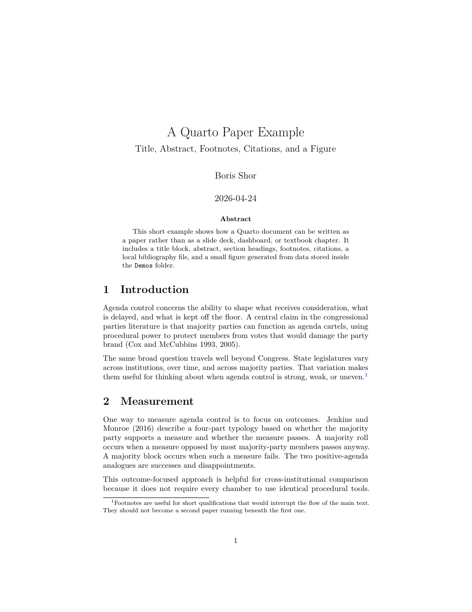

numbers <- c(4, 8, 15, 16, 23, 42)
mean(numbers)[1] 18POLS 6394 · Week 1 · Thu, Aug 27
You write one plain-text .qmd file. Quarto turns it into the format you need.
analysis.qmd
├── HTML report or web page
├── PDF or Word paper
├── revealjs presentation
├── website or dashboard
└── bookThe writing and the computation stay together in the source.
.qmd Can Become a Paper
Same source: Markdown for the writing, R for the figure, and Quarto for the finished paper.
.Rmd files. It established the modern workflow for mixing R, prose, tables, and figures, and remains common in replication archives..qmd files. It keeps that workflow while providing one system for papers, presentations, websites, dashboards, and books.Use Quarto for new work. Expect to encounter R Markdown in existing projects.
What PDF does well
What PDF does poorly
Posit Cloud has both. We will use Typst for the first paper.
first-paper.qmd~4 minutes
In RStudio:
first-paper.qmd.Click Render before editing it, then find first-paper.pdf in the Files pane. RStudio supplies a working document, so you don’t have to remember its structure from scratch.
The starter has all three parts of a Quarto document:
--- lines. It gives Quarto the document’s title, author, and output format..qmd--- lines and controls the title, author, and output format.The source stays readable even before you render it.
# makes a large heading; more # characters make lower-level headings.A labeled link is easier to read than a long URL. Quarto numbers footnotes when it renders.
A chunk begins with ```{r} and ends with ```.
<- assigns a value to an object. c() collects several values into one vector. mean() takes that vector and returns one number.
Use the green triangle to run one chunk. Rendering runs every chunk in order.
~5 minutes
In first-paper.qmd:
## Research Question and write one short paragraph.## Why It Matters with a second paragraph, one link, and one footnote.## A Small Calculation, replace the sample code with the numbers example, and render.Keep the task small; data analysis begins next week.
Clicking Render:
When rendering stops, the error tells you which chunk to inspect first.
In the Console pane, run:
The Render button and the R command both build the document from the saved source. Later we will use this command to render several documents automatically.
Give the paper two formats in YAML:
Use the Render button’s menu to choose a format, or run quarto::quarto_render("first-paper.qmd") in the Console to build both. Typst produces the PDF.
The demonstrations show finished work:
What you create today stays short: two brief paper sections, one calculation, and three content slides.
Open these two files:
Demos/paper/paper-example.qmdDemos/paper/paper-example.pdfFirst, scan the complete PDF: title page, abstract, sections, figure, discussion, and references. Then inspect the source:
paper-example.bib.This paper uses LaTeX for its PDF; your mini paper uses Typst.
Open Demos/presentation/presentation-example.html and move through the complete deck. Then open and render presentation-example.qmd.
Compare its YAML with the paper’s YAML. The source structure is the same even though the outputs serve different purposes.
In RStudio:
first-presentation.qmd.Render the untouched template once before editing it.
Use material from first-paper.qmd:
## Research Question — one or two sentences.## Why It Matters — two or three bullets.## A Small Calculation — reuse the short R chunk.Render the deck and use the arrow keys to move through it.
Rendering creates an HTML file in your project. Other people cannot reach a file that exists only inside your project.
first-paper.html → web host → public URL → reader's browserA host stores the rendered files on an internet-connected server and sends them to anyone who visits the URL.
Today we will use Posit Connect Cloud. Later we will use GitHub Pages to host work connected to a GitHub repository.
You already have a Posit login, but RStudio must be authorized to publish to your Connect Cloud account. Watch me complete the first connection before you begin.
With first-paper.qmd or first-presentation.qmd open:
Connect Cloud is easy to use for a first static page, and its free account is enough for today’s exercise.
The default address uses a generated content ID:
https://[content-id].share.connect.posit.cloudAfter publishing, open the content page and choose Edit Settings → URL → Custom name. A short name such as first-paper produces an address like:
https://[account-name]-first-paper.share.connect.posit.cloudIt remains a Connect Cloud address, but it is easier to recognize and share.
Connect Cloud gives the document a public URL.
For today’s exercise, use the short paper or presentation and the harmless sample code. Leave out personal details or research material you’d rather keep private. You can remove the page from Connect Cloud later.
~8 minutes
Publish either first-paper.qmd or first-presentation.qmd. Give the page a short custom name, make one visible change, and update the same page.
Record the URL in today’s workbook. If publishing gets stuck, keep the rendered HTML and ask Boris or Amanda for help.
first-paper.qmd, which you created and rendered earlier.Render once before editing and again after Task 2.
first-presentation.qmd, which you created and rendered earlier.If rendering fails, start with the first error and the chunk it names.
Keep the workbook as your class notes. Publish one of the two outputs you created.
first-paper.qmd, and first-presentation.qmdNext class: git inside your Posit Cloud project, before we connect anything to GitHub.
RStudio can edit the same .qmd in two ways:
We’ll use source mode while learning the structure. You can switch modes without creating a second file.
Options are #| lines at the top of a chunk.
echo: false runs the code but hides it in the output.eval: false shows the code without running it.Leave both alone today unless we have extra time to compare them.
Normal HTML output may depend on a neighboring _files/ folder. Add this YAML when you need one file that can be emailed or archived:
The HTML file becomes larger because Quarto puts its images, styles, and scripts inside it.
POLS 6394 · Fall 2026